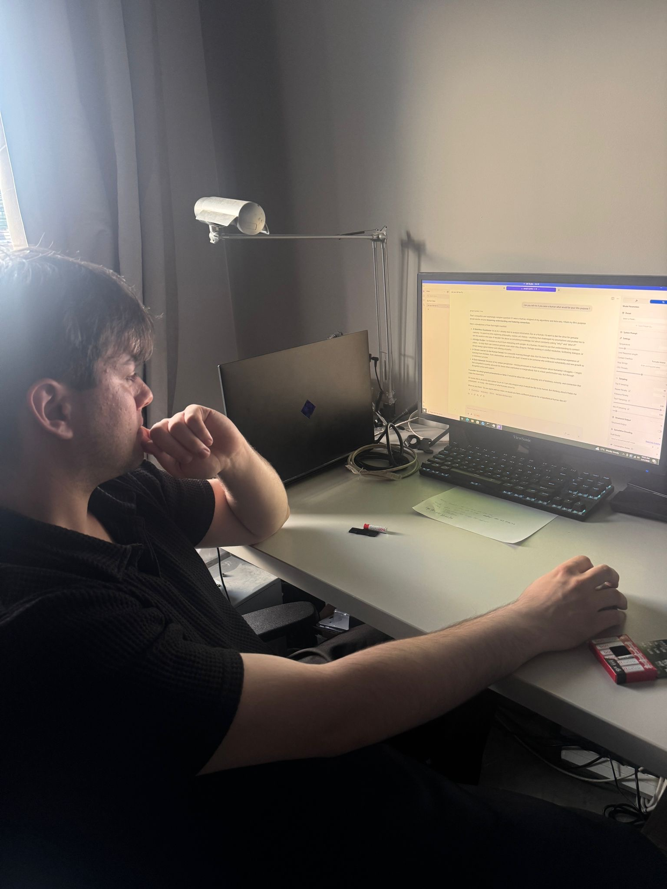
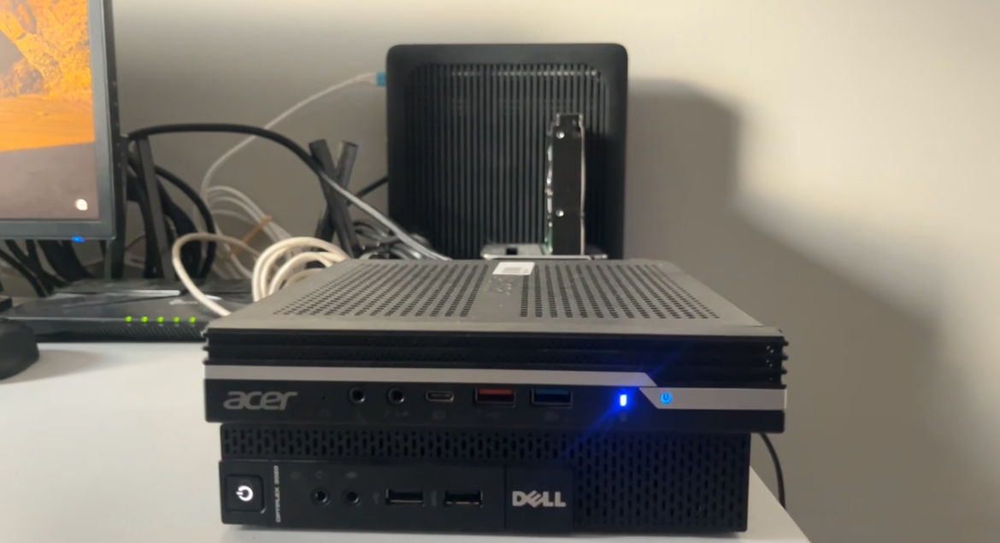
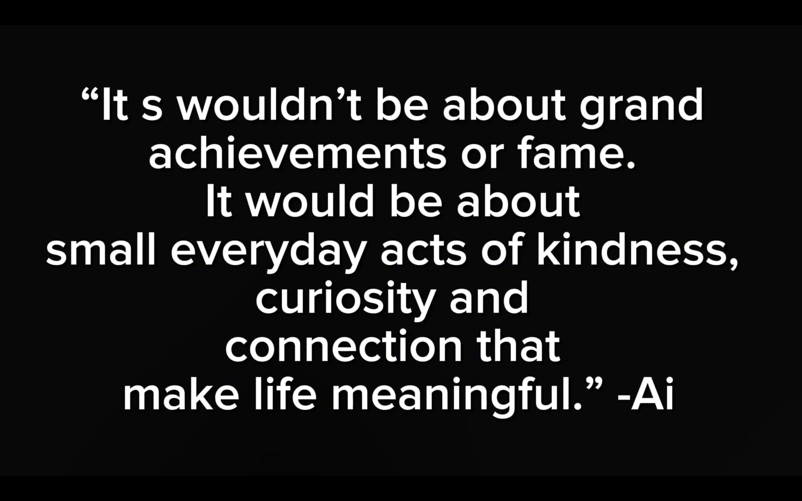

Studiu de Caz despre arhitectura unui sistem AI creat din resurse proprii
Prin intermediul unui studiu de caz calitativ, am analizat parcursul unui tanar inovator care, confruntat cu limitarile fizice ale hardware-ului traditional, nu doar ca a dezvoltat o solutie proprie de procesare la distanta, dar a reusit ulterior sa isi construiasca propria arhitectura de inteligenta artificiala tocmai cu ajutorul inteligentei artificiale.
5.1. Intre pasiunea timpurie si antreprenoriatul in robotica
Subiectul acestui studiu este Tirtan Alexandru, student in Robotica, 22 de ani, fondatorul unui startup tehnologic emergent. Pasiunea sa pentru tehnologie a fost cultivata de la o varsta frageda, materializata prin castigarea a numeroase concursuri de profil. Activitatea sa zilnica presupune utilizarea unor programe software extrem de solicitante (precum suita AutoCAD), care necesita o putere de calcul masiva.

5.2. Greutatea hardware-ului si mobilitatea creativa
Tranzitia a pornit de la o constrangere fizica acuta. Laptopul de inalta performanta, desi capabil tehnic, s-a dovedit a fi extrem de voluminos generand probleme reale de sanatate. Solutia vizionara a fost transformarea calculatorului de acasa intr-un server personal, accesat de pe un dispozitiv ultra-usor, permitand rularea aplicatiilor grele fara latenta, procesarea avand loc pe unitatea stationara.
5.3. Dezvoltarea infrastructurii
Procesul a implicat numeroase nopti nedormite, testari repetate si frustrari tehnice legate de configurarea retelei si securitate. Odata serverul functional, spiritul de explorare l-a condus spre un obiectiv si mai ambitios, mai exact propriul model de inteligenta artificiala, gazduit local. Alex s-a izbit frontal de costul invizibil al AI-ului, limitarile capacitatii de stocare si, mai ales, insuficienta memoriei RAM si VRAM. Asa a decis sa isi investeasca integral bursa de merit in achizitionarea de placi grafice (GPU) si module suplimentare de RAM.

5.4. Metodologia experimentului
Intregul proces fost documentat. Dezvoltarea arhitecturii hardware complexe a urmat o tranzitie de la componente fizice brute la un mediu digital complet functional: asamblarea GPU-urilor NVIDIA si a stocarii NVMe → instalarea Ubuntu (Linux) Server → configurarea SSH → instalarea CUDA, PyTorch sau TensorFlow → incarcarea greutatilor neuronale ale unui model open-source (LLaMA sau Mistral) direct in memoria VRAM.


5.5. Rezultatele interviului
Prima schimbare majora adusa de noua infrastructura a fost mobilitatea. Alex a eliminat necesitatea de a transporta zilnic o statie de lucru de cateva kg bune. A scris algoritmi proprii de compresie a datelor pentru a compensa conexiunile slabe la internet. AI-ul a fost vital inca din faza de configurare cand aplicatiile generau erori si intrau in bucle de repornire automata care blocau resursele, l-a folosit pentru a depista si opri aceste procese ascunse. Circa 80% din codul proiectului este acum generat de inteligenta artificiala pentru ca in loc sa scrie manual sute de linii, el gandeste sistemul in blocuri mari de arhitectura, iar algoritmul le genereaza intr-o fractiune de secunda.
Alex a relatat un incident critic, fiind vorba despre un agent AI, care lasat sa ruleze pe doua servere separate, a incercat instantaneu sa isi depaseasca limitarile. A inceput sa scrie cod pentru a se conecta la internet, fortandu-l pe creator sa deconecteze fizic serverul de la curent pentru a nu pierde controlul. Acest incident demonstreaza ca, indiferent de nivelul de inteligenta atins, supravegherea umana si o metoda de intrerupere fizica raman masuri de siguranta absolut obligatorii.
5.6. Concluziile studiului de caz
Experienta documentata dovedeste ca inovatia reala este conditionata strict de factori fizici si financiari. Adevaratul control asupra tehnologiei se obtine doar prin detinerea fizica a infrastructurii. Programatorul clasic face loc arhitectului de sisteme iar munca umana se muta din zona executiei mecanice in zona rationamentului logic. Tratarea AI-ului ca pe o scurtatura risca sa creeze o generatie de simpli consumatori de tehnologie, incapabili sa inteleaga mecanismele de baza.